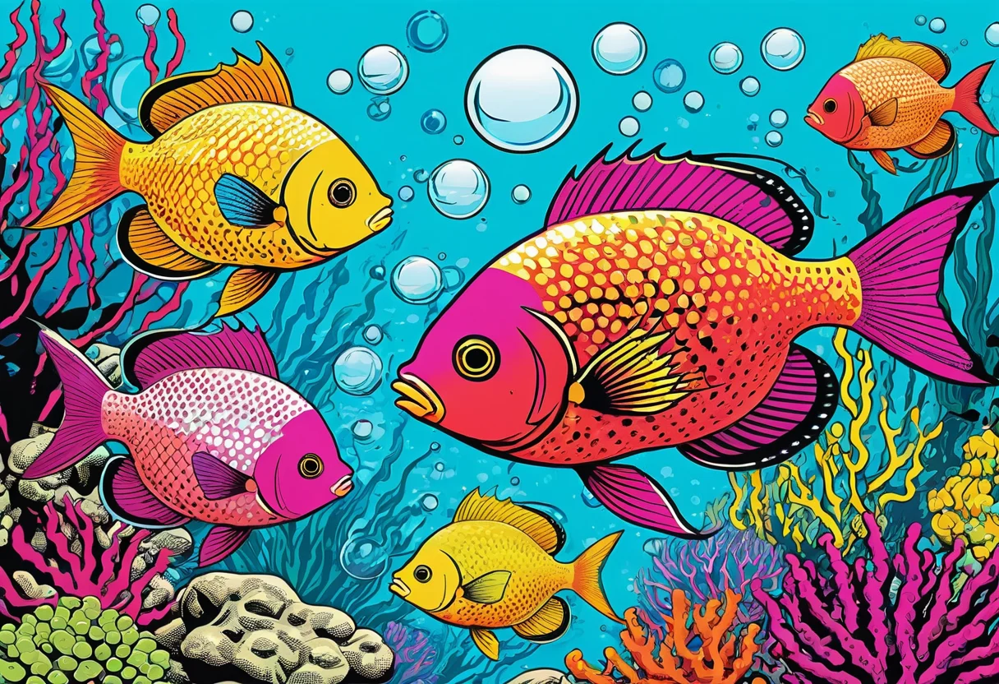

Aquarium DIY – Selber bauen und individuell gestalten
Ein Aquarium selbst zu bauen ist der Traum vieler Aquarianer. Warum ein Standard-Becken aus dem Zoofachhandel kaufen, wenn du dein eigenes, maßgeschneidertes Aquarium bauen kannst? Ein DIY-Aquarium bietet unbegrenzte Gestaltungsmöglichkeiten: besondere Maße, individuelle Formen, integrierte Technik und ein unvergleichliches Gefühl der Zufriedenheit, wenn du dein eigenes Werk mit Wasser befüllst. Doch der Bau eines Aquariums ist kein einfaches Bastelprojekt – es erfordert handwerkliches Geschick, die richtigen Materialien und vor allem Wissen um die Statik und Dichtigkeit des Glasaufbaus. In diesem Guide zeige ich dir, wie du ein eigenes Aquarium planst, baust und einrichtest.
Der Reiz des Selberbauens liegt auf der Hand: Du bestimmst die Maße exakt nach deinen räumlichen Gegebenheiten. Du kannst besondere Formen realisieren – ein niedriges, langes Becken für Labyrinthfische, ein hohes, schmales Becken für einen bestimmten Einrichtungsstil oder ein Becken mit integriertem Filter- und Technikbereich. Du sparst Geld im Vergleich zu maßgefertigten Becken aus dem Fachhandel. Und du lernst dein Aquarium auf eine Weise kennen, wie es kein fertig gekauftes Becken dir bieten kann – denn du kennst jede Naht, jede Kante, jede Schraube.
Planung – der wichtigste Schritt
Bevor du zur Scheibe greifst, steht die gründliche Planung. Entscheide dich für die Maße deines Beckens. Für Einsteiger empfiehlt sich ein Standard-Rechteckbecken – es ist statisch am einfachsten zu berechnen und zu kleben. Die Länge sollte ein Vielfaches der Höhe sein: Ein Verhältnis von 2:1 oder 3:1 (Länge zu Höhe) ist ideal. Ein Becken mit 100 cm Länge, 40 cm Höhe und 35 cm Tiefe ist ein guter Einstieg. Vermeide zu hohe Becken (über 50 cm), denn der Wasserdruck auf die unteren Scheiben ist enorm, und die Reinigung wird schwierig. Zu große Becken (über 300 Liter) solltest du als erstes DIY-Projekt vermeiden – hier wird die Statik komplex und Fehler können teuer werden.
Zeichne dein Becken maßstabsgetreu auf Papier oder mit einem einfachen CAD-Programm. Notiere alle Maße: Länge, Höhe, Tiefe, Glasstärke, Position und Größe von Verstrebungen (Zugbändern) oben am Becken, Ausschnitte für Filterrohre, Position der Heizung, Durchführungen für Kabel. Je detaillierter deine Planung, desto weniger Überraschungen gibt es beim Bau. Vergiss nicht: Das Becken muss später an seinen Aufstellungsort passen – nicht nur in den Raum, sondern auch durch die Tür.
Materialien und Werkzeuge
Für den Bau eines Aquariums brauchst du folgende Materialien:
- Glas: Verwende ausschließlich Floatglas (Einscheibensicherheitsglas ist nicht geeignet, da es bei Bruch in viele kleine Stücke zerfällt). Die Glasstärke hängt von der Beckengröße ab. Für ein 100×40×35 cm Becken sind 6 mm Glas ausreichend, für 120 cm Länge 8 mm, für 150 cm Länge 10 mm. Im Zweifel lieber eine Stärke dicker wählen – Sicherheit geht vor. Lasse dir die Scheiben im Glasfachhandel auf Maß schneiden und die Kanten anschleifen. Scharfe Kanten sind gefährlich und führen zu Spannungsspitzen im Kleber.
- Silikon: Nur durchsichtiges, säurevernetzendes Aquariensilikon (100 % Silikon ohne Zusätze wie Schimmelstopp oder Fungizide). Diese Zusätze sind giftig für Fische. Geeignet sind Marken wie Soudal Aquarium Silikon, Den Braven oder der Klassiker von Dow Corning. Ein Becken dieser Größe braucht etwa eine bis zwei Silikonkartuschen.
- Zugbänder (Verstrebungen): Verhindern, dass sich die langen Scheiben unter dem Wasserdruck nach außen wölben. Bei Becken über 80 cm Länge sind Zugbänder aus Glas (gleiche Stärke wie die Seitenscheiben) Pflicht. Sie werden quer über die obere Öffnung des Beckens geklebt – alle 30 bis 40 cm eines.
- Werkzeuge: Silikonspritze, scharfes Cuttermesser, Klebeband (Malerkrepp), Reinigungsalkohol (Isopropanol), fusselfreie Tücher, Abstandshalter (Zahnstocher oder dünne Holzleisten), ein stabiles Brett als Arbeitsfläche.
Der Bau – Schritt für Schritt
Der Bau eines Aquariums erfordert Ruhe, Sauberkeit und Präzision. Plane einen ganzen Tag ein und arbeite in einem staubfreien Raum mit konstanter Temperatur (20–25 °C). So gehst du vor:
- Vorbereitung: Reinige alle Glaskanten mit Reinigungsalkohol. Sie müssen absolut fett- und staubfrei sein. Lege alle Scheiben griffbereit. Klebe die Kanten mit Malerkrepp ab, um saubere Silikonkanten zu erhalten.
- Bodenplatte: Lege die untere Scheibe (Boden) auf eine flache, stabile Unterlage. Trage auf allen vier Seiten einen gleichmäßigen, ca. 3 mm dicken Silikonstrang auf.
- Rückwand und Seiten: Setze die Rückwand auf die Bodenplatte und richte sie mit Klebeband von außen aus. Danach folgen die beiden Seitenscheiben. Jede Scheibe wird von außen mit Klebeband fixiert. Achte auf saubere, gleichmäßige Fugen (keine Luftblasen).
- Abstandshalter: Stecke zwischen die Fugen dünne Abstandshalter (0,5–1 mm), um die Silikonfuge gleichmäßig zu halten. Nach dem Aushärten werden sie entfernt, die Lücke wird durch das Silikon geschlossen.
- Frontscheibe: Trage Silikon auf alle drei Kontaktflächen der bereits montierten Scheiben auf (untere Kante, linke und rechte Seitenkante) und setze die Frontscheibe ein. Fixiere auch sie mit Klebeband.
- Zugbänder: Nachdem die Grundkonstruktion steht, werden die Zugbänder auf die obere Kante geklebt. Sie müssen genau passen und eben aufliegen.
- Aushärten: Lasse das Aquarium mindestens 48 Stunden, besser 72 Stunden, bei Raumtemperatur aushärten. Bewege es in dieser Zeit nicht.
- Verschneiden: Nach dem Aushärten schneidest du die Klebebänder und überschüssiges Silikon mit einem scharfen Cuttermesser ab.
Dichtigkeitstest – bevor Wasser ins Becken kommt
Bevor du dein selbst gebautes Aquarium in Betrieb nimmst, musst du es auf Dichtigkeit prüfen. Stelle das Becken an seinen endgültigen Standort (Nie ein volles Aquarium bewegen!). Der Untergrund muss absolut eben und waagerecht sein – eine Unebenheit von nur 1 mm kann bei einem 100-Liter-Becken zu enormen Spannungen führen. Lege eine dünne Styropor- oder PVC-Matte unter das Becken, um Druckpunkte auszugleichen.
Befülle das Becken zunächst nur zu einem Drittel mit Leitungswasser. Lasse es 24 Stunden stehen und kontrolliere alle Nähte von innen und außen auf Feuchtigkeit. Tritt kein Wasser aus, fülle auf zwei Drittel auf und warte weitere 24 Stunden. Wenn auch dann alles dicht ist, kannst du das Becken vollständig befüllen und nach weiteren 24 Stunden endgültig für den Aquarienbetrieb freigeben. Ein Tipp: Stelle das Becken auf Zeitungspapier – selbst kleinste Tropfen fallen sofort auf.
Individuelle Einrichtung für dein DIY-Becken
Der Vorteil eines selbst gebauten Beckens ist die Freiheit bei der Einrichtung. Du kannst spezielle Rückwände aus Styropor und Epoxidharz bauen, maßgefertigte Unterschränke zimmern oder ein integriertes Filtersystem mit mehreren Kammern realisieren. Besonders beliebt ist der Bau eines „Cube“- oder „Würfel-Aquariums“ mit einem integrierten Technikbecken (Sumpf) im Unterschrank – eine Lösung, die du im Handel kaum fertig findest.
Für die Gestaltung der Rückwand eignen sich Platten aus extrudiertem Polystyrol (XPS), die du mit einem Heißdraht-Schneider oder Cuttermesser in Felsformationen formen und anschließend mit Epoxidharz beschichten kannst. Diese Rückwände sind leicht, sehen täuschend echt aus und bieten hervorragenden Halt für Aufsitzerpflanzen. Auch der Bau von Terrassierungen und Hochebenen aus Stein und Wurzelholz ist in einem selbst gebauten Becken einfacher, weil du die Maße genau auf die geplanten Dekoelemente abstimmen kannst.
DIY-Unterschrank – stabil und passgenau
Ein Aquarium-Unterschrank muss extrem stabil sein – er trägt das gesamte Gewicht des Beckens, das bei einem 200-Liter-Becken schon 250 bis 300 Kilogramm betragen kann. Verwende wasserfest verleimtes Multiplex-Sperrholz (18 mm oder stärker) oder Siebdruckplatten. Der Schrank muss absolut waagerecht und torsionssteif sein. Verstärke die Ecken mit Schraubwinkeln und setze eine doppelte Bodenplatte ein. Die Türen sollten mit hochwertigen Scharnieren und Magnetverschlüssen ausgestattet sein. Ein Belüftungsschlitz oder ein Lüftungsgitter an der Rückwand verhindert Staunässe und Schimmelbildung hinter dem Schrank.
Beim Bau des Unterschranks solltest du auch die Technik mitplanen: Ein Fach für den Außenfilter, Kabelführungen für Beleuchtung und Heizung, ein Steckdosenleiste mit ausreichend Plätzen und ein Staubsauger-Parkplatz – all das macht die spätere Pflege enorm einfacher. Eine wasserdichte Beschichtung mit Bootslack oder Epoxidharz schützt den Schrank vor Spritzwasser und Feuchtigkeit.
Technik individuell integrieren
Ein selbst gebautes Aquarium bietet dir die Möglichkeit, die Technik unsichtbar zu integrieren. Du kannst einen hinteren oder seitlichen Technikbereich abtrennen, in dem Filter, Heizung, CO₂-Anlage und Dosierpumpen Platz finden. Diese Kammer wird durch eine Glaswand mit Schlitzen oder einem Gitter vom Hauptbecken getrennt. Das Wasser strömt durch die Öffnungen in die Technikkammer, wird dort gereinigt und erwärmt und fließt gereinigt zurück.
Ein solcher integrierter Technikbereich hat mehrere Vorteile: Keine sichtbaren Schläuche oder Kabel im Aquarium, die Heizung verteilt die Wärme gleichmäßiger, und der CO₂-Diffusor kann direkt in den Rücklauf eingebaut werden. Der Nachteil: Der Technikbereich verkleinert das Hauptbecken um etwa 10 bis 20 Prozent des Gesamtvolumens. Plane dies von Anfang an in deinen Maßen mit ein.
Rechtliche Aspekte und Versicherung
Ein selbst gebautes Aquarium ist ein Bauwerk, für das du als Erbauer die Verantwortung trägst. Prüfe vor dem Bau deine Hausratversicherung – die meisten Policen decken Wasserschäden durch Aquarien ab, aber oft nur bis zu einer bestimmten Beckengröße und nur, wenn das Becken fachgerecht aufgestellt wurde. Ein selbst gebautes Becken könnte als „nicht fachgerecht“ eingestuft werden, wenn es zu einem Schaden kommt. Frage im Zweifel bei deiner Versicherung nach und lasse dir die Deckung schriftlich bestätigen. Bei größeren Becken (über 500 Liter) kann eine separate Versicherung oder eine Zusatzklausel sinnvoll sein.
Häufige Fehler beim Aquarium-Selbstbau
- Zu dünnes Glas: Die Glasstärke wird oft unterschätzt. Im Zweifel nimm die nächsthöhere Stärke. Ein geplatztes Aquarium verursacht immense Schäden.
- Zu wenig Silikon: Die Silikonfuge muss gleichmäßig und ohne Lücken sein. Zu dünn aufgetragenes Silikon hält dem Druck nicht stand.
- Unsaubere Kanten: Fett- oder staubverschmutzte Glaskanten führen zu Haftungsproblemen. Das Silikon löst sich mit der Zeit und das Becken wird undicht.
- Ungeniessende Aushärtezeit: Silikon braucht Zeit zum Aushärten. 24 Stunden sind das absolute Minimum, 72 Stunden sind besser. Ein zu früh befülltes Becken wird undicht.
- Keine Zugbänder bei langen Becken: Ab 80 cm Länge sind Zugbänder Pflicht, sonst wölben sich die Scheiben nach außen und die Klebenähte werden belastet.
- Falscher Untergrund: Ein unebener Stand führt zu Spannungen und Rissen. Eine Styroporplatte (10–20 mm) unter dem Becken ist die günstigste Versicherung gegen Bruch.
Ein selbst gebautes Aquarium ist ein wunderbares Projekt, aber es erfordert Respekt vor den physikalischen Kräften. Der Wasserdruck auf die Scheiben ist enorm – ein Fehler kann nicht nur das Becken, sondern dein ganzes Zuhause beschädigen. Gehe kein Risiko ein.
Fazit – Mit Köpfchen und Handwerk zum Traumbecken
Ein Aquarium selbst zu bauen ist kein Projekt für einen verregneten Nachmittag, sondern ein anspruchsvolles Vorhaben, das sorgfältige Planung, handwerkliches Geschick und Geduld erfordert. Aber es ist ein ungemein erfüllendes Projekt. Wenn du dein selbst gebautes Becken zum ersten Mal mit Wasser befüllst, die Fische einsetzt und die Pflanzen wachsen siehst, wirst du mit einem Gefühl belohnt, das kein gekauftes Becken dir geben kann.
Starte mit einem überschaubaren Becken (80–120 Liter), sammle Erfahrung mit dem Kleben und der Statik und wachse dann in größere Dimensionen. Ein gut geplantes und solide gebautes DIY-Aquarium kann dir Jahrzehnte Freude bereiten – und ist ein echter Hingucker, der deine Persönlichkeit widerspiegelt. Trau dich, aber geh mit Bedacht vor. Dein Eigenbau wird dich mit jeder Scheibe, jeder Naht, jedem Fisch belohnen.
🛒 Werkzeuge und Materialien für den Aquarium-Selbstbau
Diese Produkte und Materialien haben sich beim Aquarium-Selbstbau bewährt:
Mehr zur technischen Ausstattung deines Aquariums findest du in unserem Aquarium Technik Überblick. Für die richtige Beleuchtung deines Eigenbaus wirf einen Blick in unseren Beleuchtungs-Guide.